Vierzon 2007
(Les photos au format 16/9 ou 9/16 sont de Bruno Claes que je remercie)

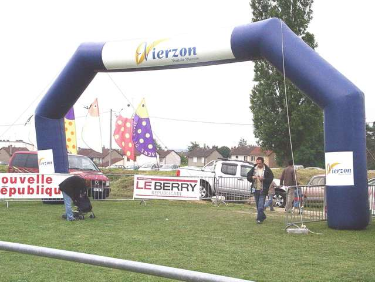
Vierzon, la plaine de Brouhot nous accueille à travers son vaste portail éphémère, réservé d'ailleurs à l'organisation et aux cervolistes !

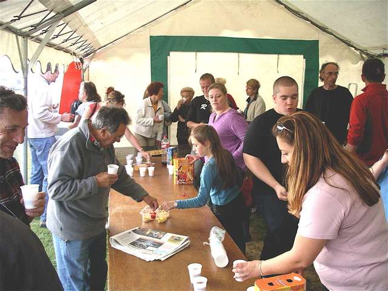
Déjà vendredi soir, pour remercier ceux qui sont arrivés tôt, un petit pot d'accueil permet de prolonger les séminaires sur les prix des campings-cars, la santé, les modifications à apporter aux logiciels des GPS, etc. Pot d'autant plus mérité que plusieurs ont déjà volé dès leur arrivée !

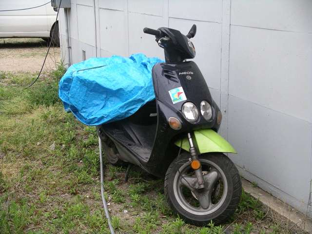
Michel aussi est arrivé, au terme d'une longue longue route depuis Paris sur son vaillant coursier dont il prend bien soin...

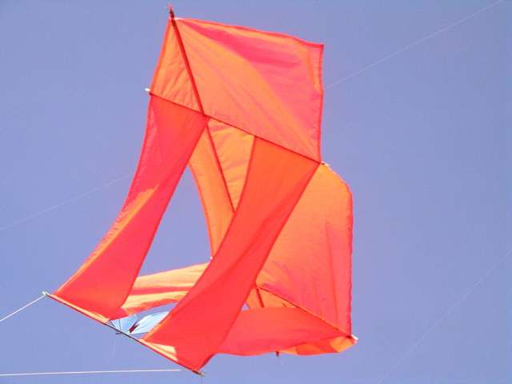
Le vent est léger en ce samedi matin, et après le petit-déjeuner offert par Vent de Folie, les cerfs-volants montent doucement, comme cette espèce de Faga à grande boîte Conyne...

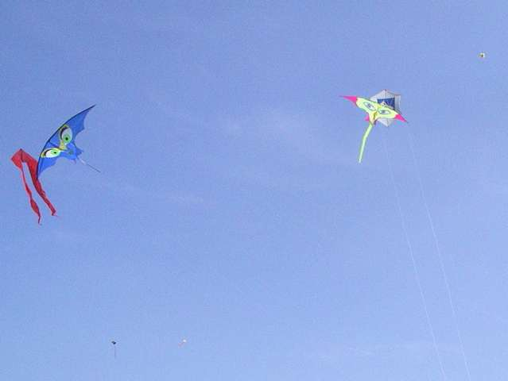
Les Agaçants font un petit vol de groupe sous ces conditions bien adaptées à la fragilité de leur raccord central...

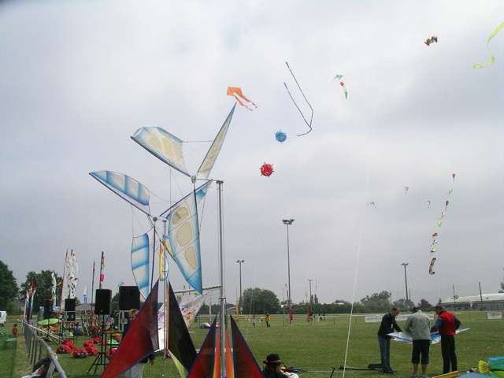
Michel Gressier a monté pour 2 jours ses grandes éoliennes très sophistiquées, avec roulements à bille, voiles lattées, etc...

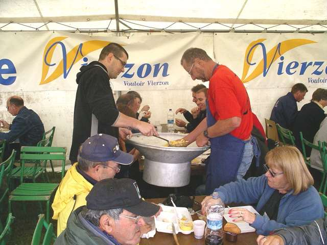
A midi, déjeuner, après bien sûr un petit apéritif pour ceux qui n'étaient pas là hier... Légumes ? Devinez ! Des frites, bien sûr, avec les maîtres fritiers qui sont présents, ce serait dommage de changer...

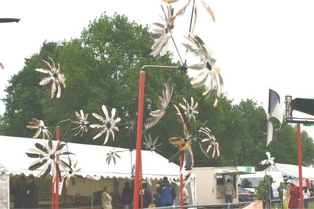
JdVs, Joël a planté ses moulinets en plumes de pintades et volatiles divers. Ca tourne doucement ce matin, c'est encore plus poétique comme ça...

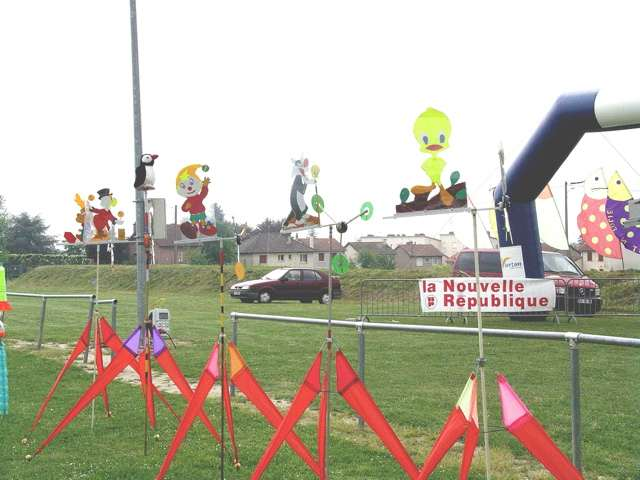
François Guzman a aussi planté ses moulinets en matières plus modernes et souvent réflectorisées...

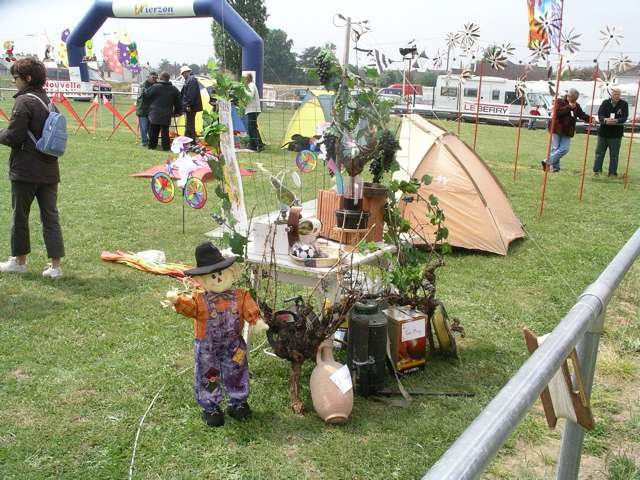
Gaby, bien sûr, a installé son bazar à la gloire des Côtes de Brouilly, avec cep de vigne, robinet permanent, etc...

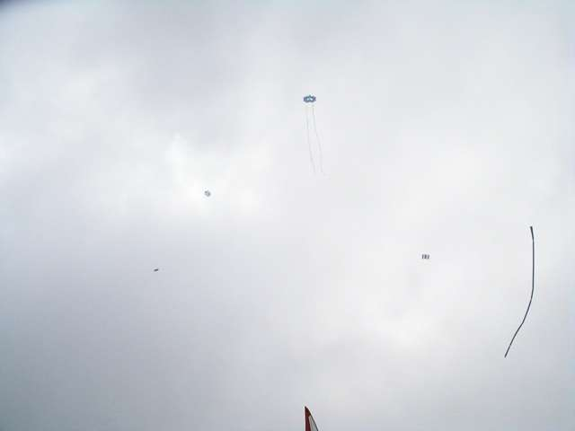
Peu de vent = du mal à décoller et il faut rester haut ! Le spectacle est léger et peu impressionnant...

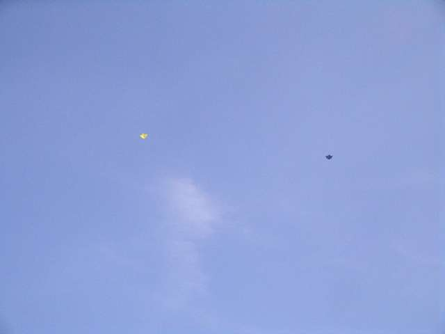
Gilles et Catherine ont monté leurs Jessicas 12 à au moins 300 m, en parallèle, avec une stabilité sans pareille, sauf quand un thermique les fait monter à la verticale et planer en cercle...

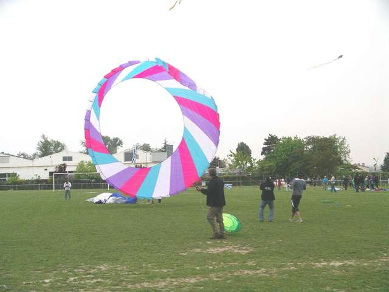
Le bol a bien du mal à se gonfler aussi, pas question de l'attacher, il faudra souvent que les propriétaires se paient un petit temps de course pour le maintenir ouvert !

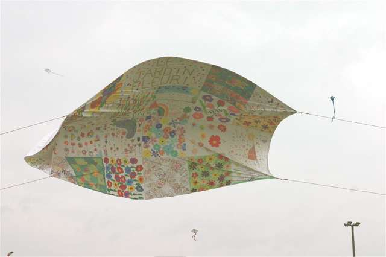
Les enfants des écoles ont réalisé une bâche jardinière, qui vole d'autant mieux que le vent n'est pas démentiel... Il faut en effet la piloter en permanence, donc la tenir à la main...

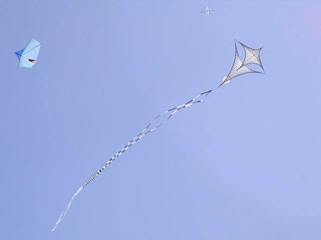
Ce cerf-volant bien tendu et au très beau décor a dû demander quelques heures de couture ! En haut, le Jessica de Jean-Marc, en toile de K-way.

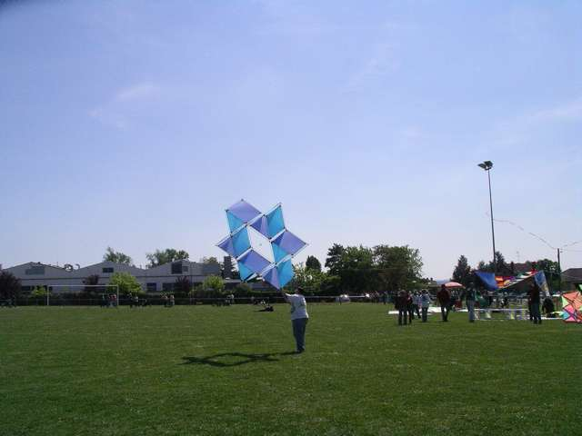
Philippe a réalisé cette étoile à 6 branches très bien tendue et rigide, qui vole en mode "flocon". ...

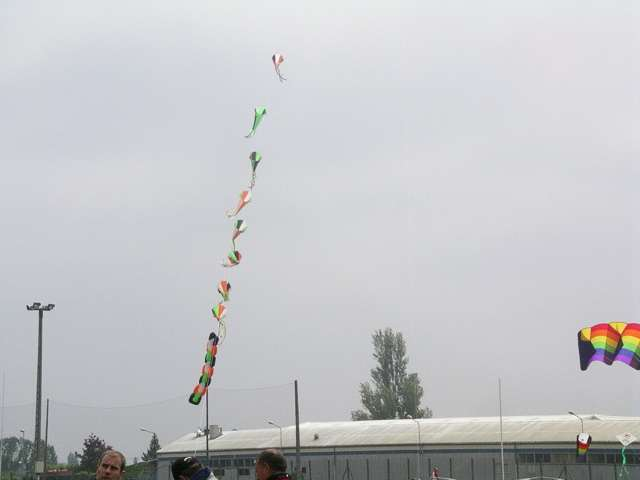
Le vent monte, on voit les lignes se décorer de queues qui traînent comme cet ensemble de cônes tournants... terminé par une chaîne !

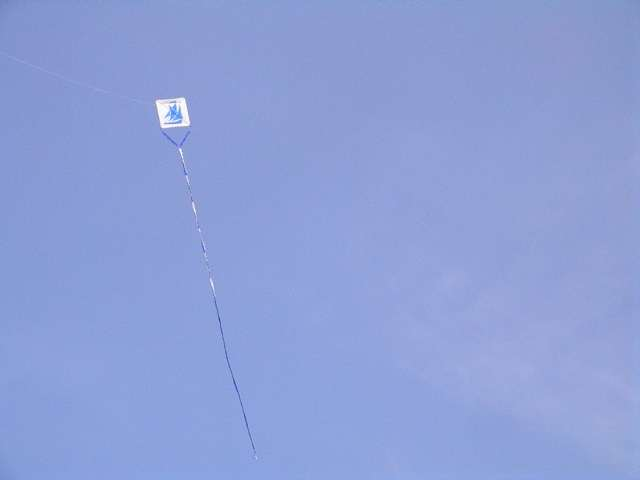
J'aime bien le dessin un peu Matisse de ce carré. A noter qu'il est renforcé vers le quart avant d'un tube transversal qui empêche la toile avant de pocher et le rend bien stable.

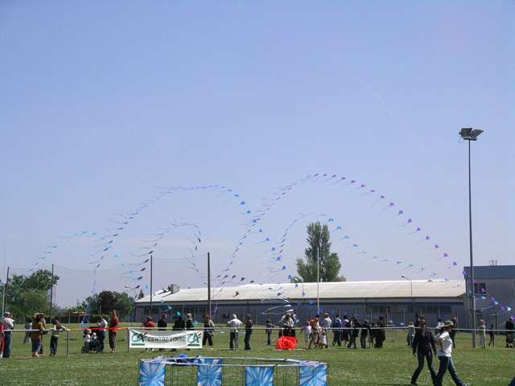
On verra aussi se succéder diverses arches, comme celles de Michel Gressier qui soulignent la turbulence...

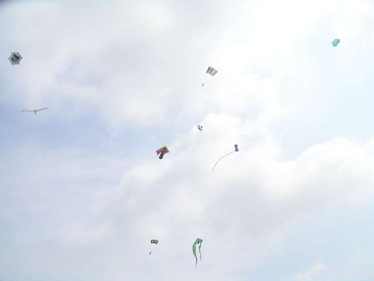
J'ai monté mon Albatros2, Jean-Marc son Rokkaku, Loïk son tambourin, et il y a finalement pas mal de monde en l'air...

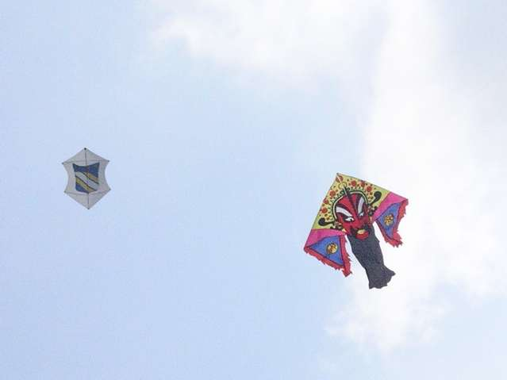
Joël revenu des antipodes a rencontré en Chine un Michel bis qui se déplace en Mob et lui a remis un delta... à l'inspiration plutôt japonaise ! Le Rokkaku de Jean-Marc porte des écus interchangeables velcrotés...

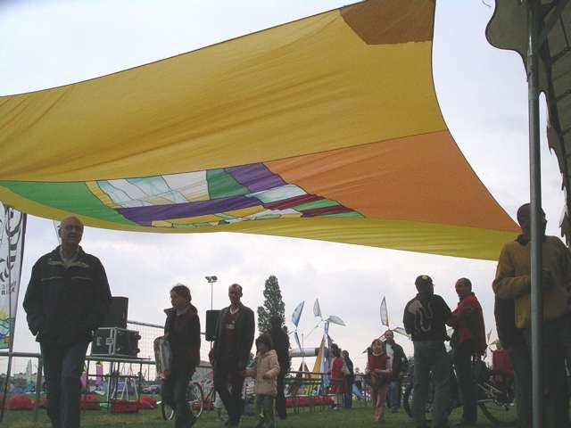
Michel Gressier a tendu de ses velums devant la tente de restauration, Ils sont beaux et seront bien utiles quand il tombera quelques gouttes...

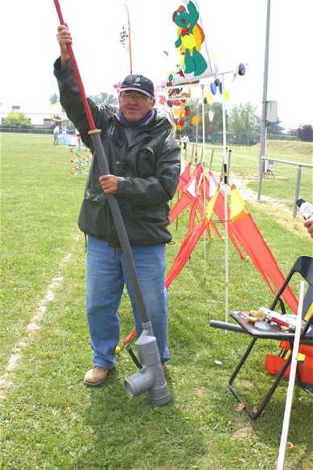
L'artillerie est de sortie... François et Joël ont apporté leur canon à patates. François charge consciencieusement le sien...

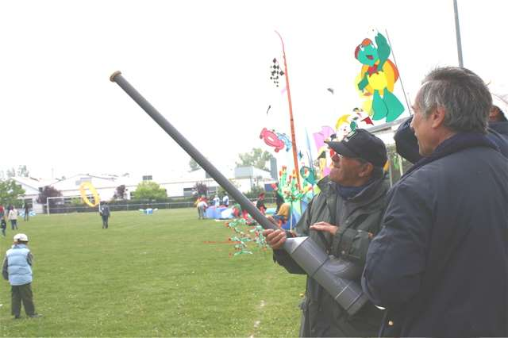
Ensuite, une petite giclée de laque par la culasse, et plus qu'à actionner l'étincelle du briquet, enfin, ça marche un coup sur cinq...

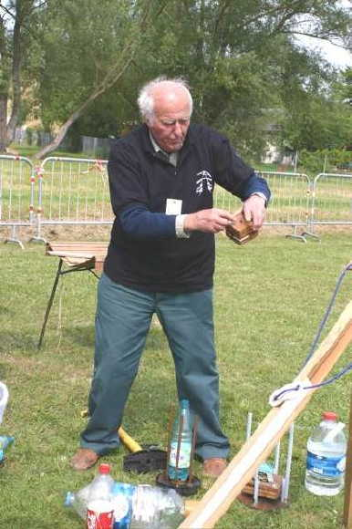
Si vous parlez à Jacques, il vous décrira le fonctionnement de toutes ses fusées, celles gonflables et à eau, ou celles à élastique, avec ou sans parachute, et sans en oublier un détail...

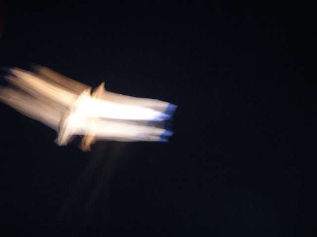
Samedi soir, vol de nuit, très bien éclairé et avec du vent qui s'est enfin levé après dîner (pendant le dessert, j'ai pu faire du cerf-volant indoor... en extérieur sans être gêné par les courants d'air !).

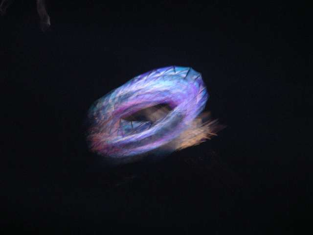
Il y a assez de vent pour monter des roues, qui n'ont pas trop souffert des atterrissages sur la tranche cet après-midi...

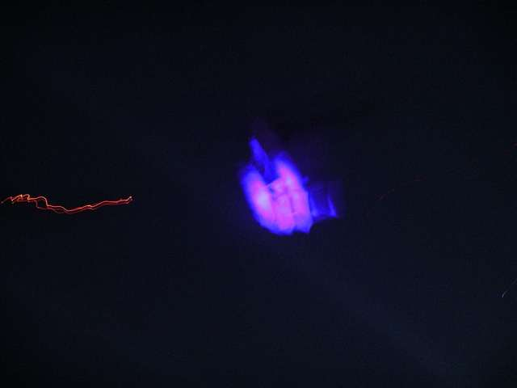
Les projecteurs sont équipés de filtres colorés, dont un "lumière noire" très spectaculaire, beaucoup de spi ayant une réponse fluo saisissante !

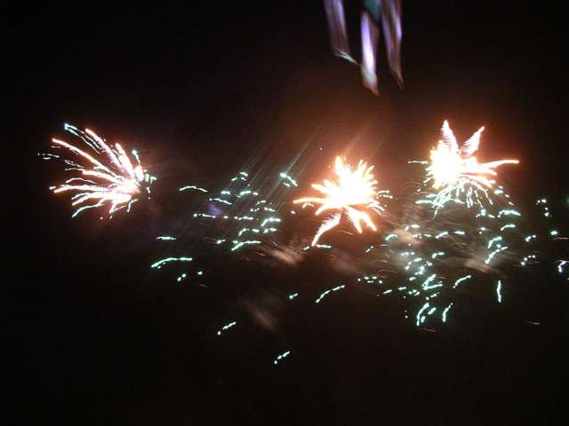
Ensuite, beau feu d'artifice avec de la recherche et des figures inédites...

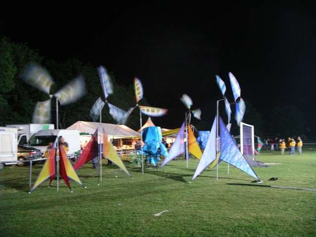
Tout fini, les lumières du stade sont allumées, c'est bien pratique pour les démontages ! Michel laissera ses éoliennes qui tourneront encore pendant notre sommeil...

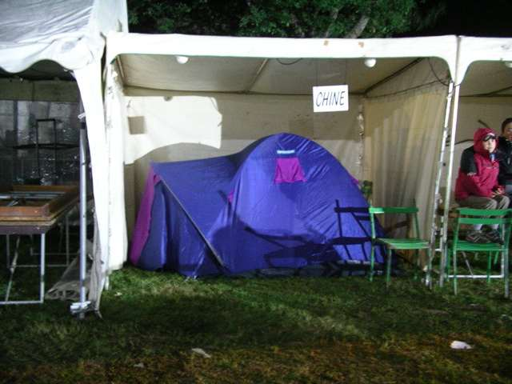
Et certains profiteront des stands libres pour y monter leur tente, car il ne fera pas chaud cette nuit !

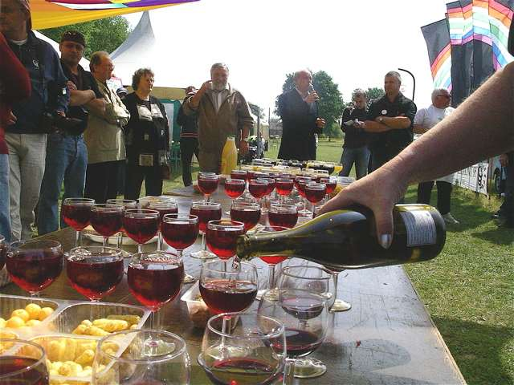
Dimanche midi, encore un pot, bien sûr... L'organisation du remplissage des verres est bien rodée, maintenant...

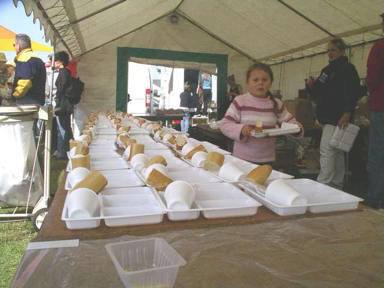
Idem pour les plateaux, les bonnes volontés insensibles à l'alcool sont mobilisées pour les préparer, pendant que la friture chauffe !

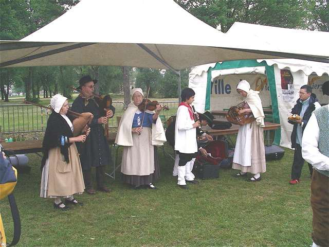
Pendant le banquet, un groupe berrichon nous régale de musique...

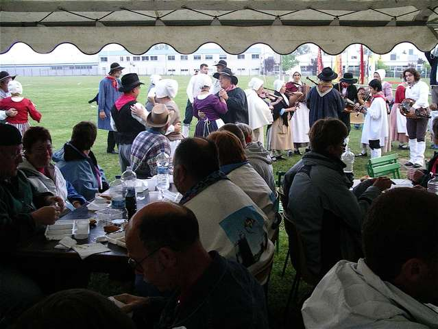
Et des danseurs du même tonneau nous démontrent avec brio toutes les facettes de la bourrée berrichonne !

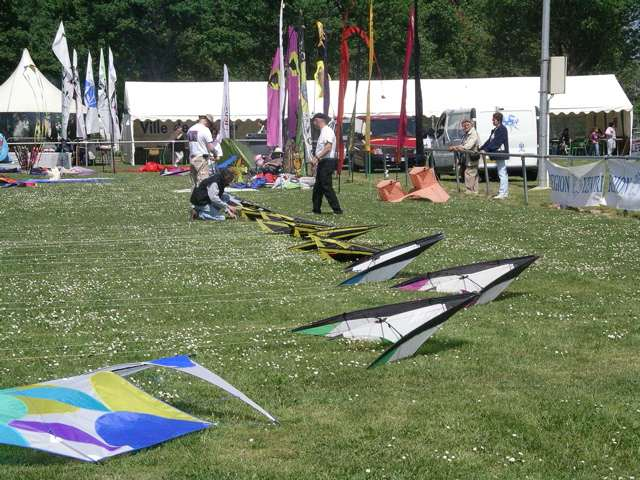
Dans l'après-midi, suffisamment de vent pour monter un Méga-Team ! Entre les Hurricane et les Sens Ciel, ça fait quand même du monde...

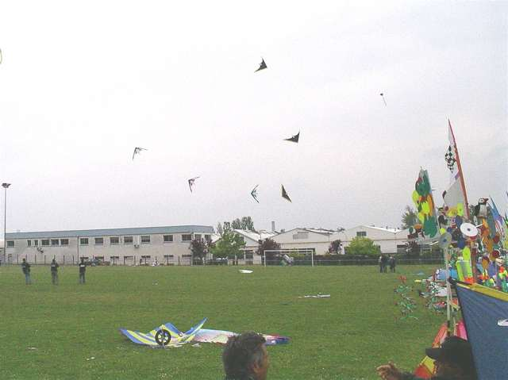
Le Méga-Team va voler un moment, au prix de quelques embrouillaminis liés à des décrochages par vent faible...

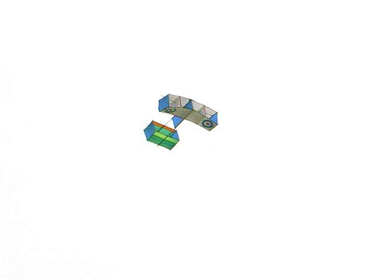
Un avion cellulaire, coloré, un peu souple, mais volant bien survole le total...

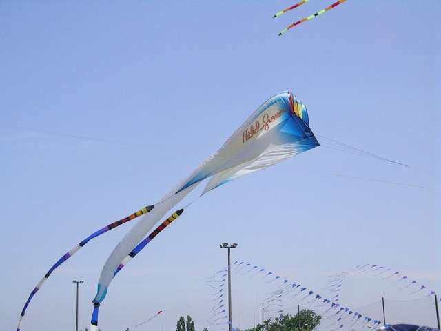
C'est le moment des grands flow-form. Vierzon a sorti le sien, immense et bien connu. Michel se met aussi de la partie...

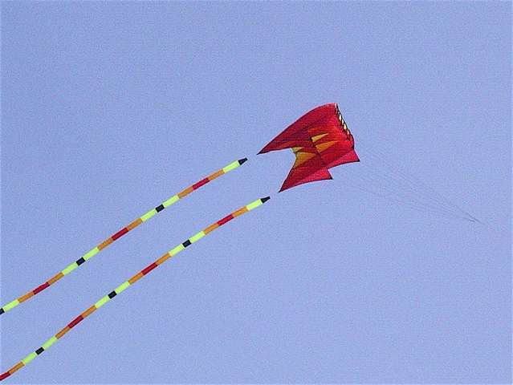
Un autre grand engin, d'un beau rouge, celui-là, vient compléter le tableau...

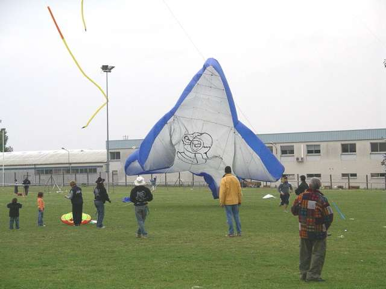
Dans les gros machins, une énorme étoile a du mal à se gonfler, pendue à sa ligne ! Mais quand elle se gonfle, elle entraîne tout, même sa cervoliste enceinte qui ramasse 2 barrières au passage, ce n'est pas vraiment recommandé dans son état !

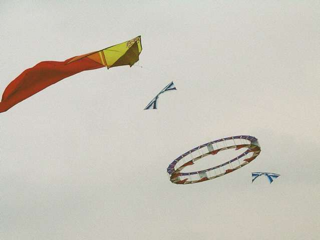
Sous un grand Pyrodelta, Thierry fait voler sa nouvelle roue, très fine et qui mérite d'être vue de près !

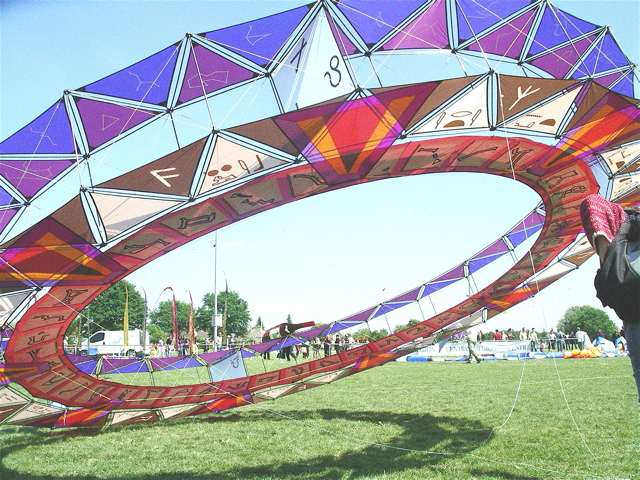
Au sol, on la voit équipée de son "velum" interne qui porte des caractères mésopotamiens, alors que la roue est brodée, au rez-de-chaussée de runes et d'hiéroglyphes, avec toutes les traductions au dos, et au premier des principales constellations !

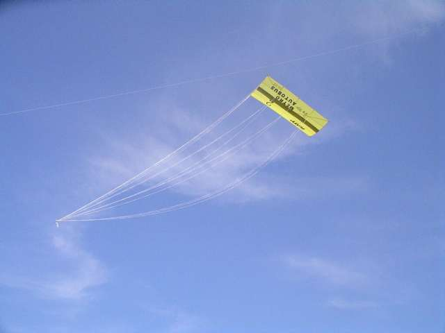
Concours de création, thème Les Régions : hier, on a pu admirer les cerfs-volants, aujourd'hui, on les fait voler... Ce sont les Hurricane qui vont gagner avec leur beau ticket de métro gréé en Edo.

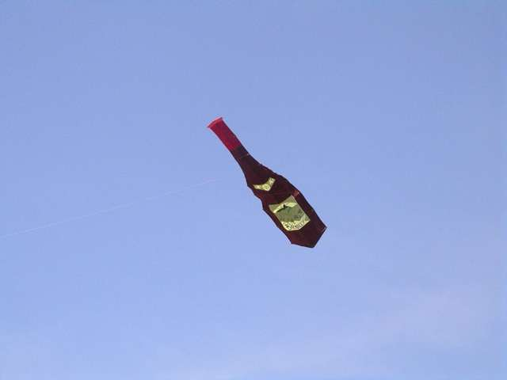
Deuxième, Gaby, avec sa bouteille de Côtes de Brouilly, bridée sur le terrain à la dernière minute. Elle fait à peu près 3 m de haut, et son vol est assez stable, sans queue.

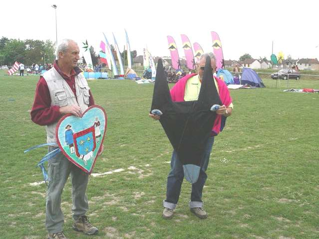
Deuxième ex-aequo, Bernard et son petit coeur décoré à la naïve... Le baudet de William était bien rigolo, mais il n'avait qu'une ligne de 2 m ! (exprès, William dit qu'il a tendance à brouter l'herbe avec les oreilles).

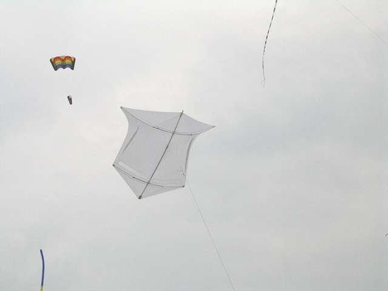
Jean-Claude Veillerobe a fait voler son Rokkaku modifié. Il est plus large des épaules que des hanches, et il a des ouvertures devant la vergue arrière pour diminuer la traînée et la traction ! Il a aussi bien raidi le longeron depuis la première version dont le nez pointait vers le ciel.

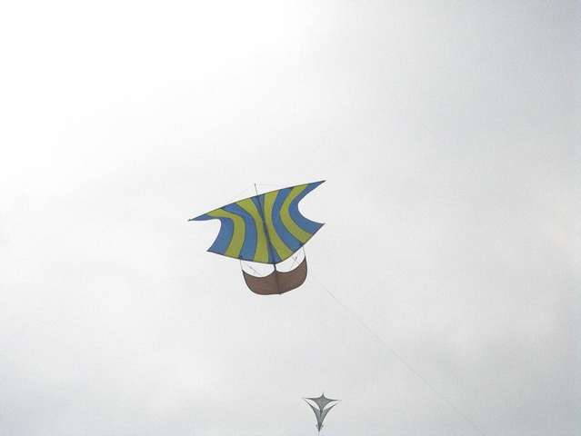
A volé aussi une petite flottille de drakkars ! Conception astucieuse, dérivée du roller et bien adaptée au vent léger.

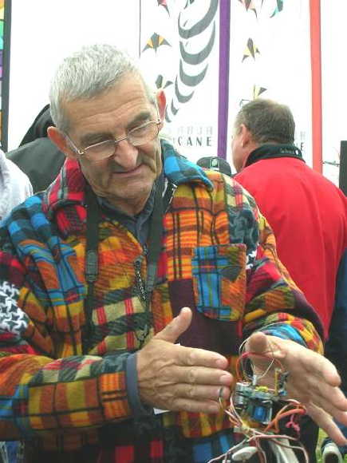
L'appareil de Jean-Claude, il vous l'explique en long et en large. Il a aussi construit un boîtier de commande spécial, où une rangée de boutons commande la fonction à utiliser, et un petit manche un axe la met en oeuvre, le tout tenant dans une main.

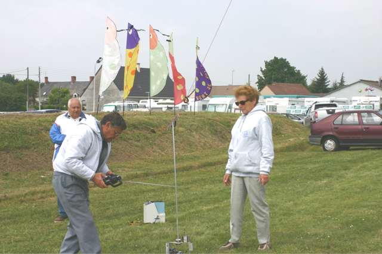
André refuse absolument de partir sans avoir fait de photo. Il s'obstine malgré le manque de vent à vouloir lever sa nacelle négligeant bravement les risques que cela comporte pour le matériel.

On verra aussi se produire une brillante équipe de révos, très variée pour ne pas dire disparate !

Les cerfs-volants sont des créations de Michel Gressier, très belles comme d'habitude !

Loïk Lamalle a amené une nouvelle création, toujours dans son style personnel : étagères et entourage en bandes de spis, formes anguleuses. Elle est belle, et vole bien car plus rigide que les précédentes (tant que le tissu est neuf ?).
Finalement, on a eu du beau temps et du vent les 2 jours, à part quelques épisodes. Temps curieux au soir : de petits nuages, chacun traînant sa petite averse ! Mais ça n'atteint pas le sol, Alléluia !

Vierzon, je n'ai pas su la fin, je suis parti à 5 h avec tristesse en regrettant l'accueil et la générosité de l'équipe, pour aller remplir mon devoir de citoyen ! Trois heures de route, et je suis arrivé un quart d'heure avant la fermeture, bien calculé, non ?